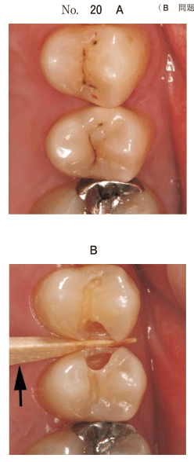
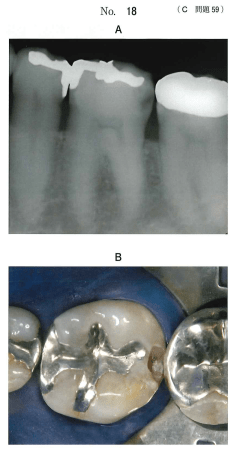
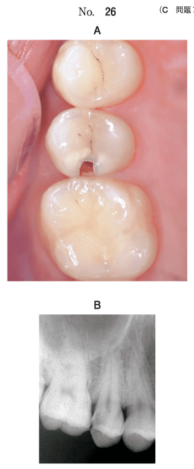

隣接面の診査や修復操作のために、隣り合う歯を一時的に離開させる方法。
| 原理 | 器具 | 機序 |
|---|---|---|
| 楔入 （wedging） |
アイボリーのセパレーター | 歯間に押し込んで分離 |
| エリオットのセパレーター | 歯間に押し込んで分離 | |
| 弾性ゴム | ゴムの弾性で徐々に分離 | |
| ウッドウェッジ | 木製の楔を歯間に挿入 | |
| 牽引 （traction） |
フェリアーのセパレーター | 2歯を引っ張って分離 |
フェリアーのセパレーターのみが牽引の原理を利用。他はすべて楔入の原理。
木製または樹脂製の楔状の器具。隣接面修復時に多用される。
| 目的 | 説明 |
|---|---|
| 歯間乳頭の保護 | 切削時の歯間乳頭損傷を防ぐ |
| 隣在歯の保護 | 切削器具による隣在歯損傷を防ぐ |
| マトリックスの固定 | マトリックスバンドを歯面に密着 |
| 歯間分離 | 接触点回復のためのスペース確保 |
歯間分離で牽引の原理を利用するのはどれか。1つ選べ。
【解説】
21歳の女性。上顎左側第一小臼歯と第二小臼歯との冷水痛を主訴として来院した。コンポジットレジン修復を行うこととした。初診時の口腔内写真（別冊No.20A）と齲蝕除去中の口腔内写真（別冊No.20B）とを別に示す。
矢印で示す器具の使用目的はどれか。1つ選べ。

【解説】矢印で示されているのはウェッジ。齲蝕除去中なので、歯間乳頭の保護が主目的。
60歳の男性。下顎左側第一大臼歯の違和感を主訴として来院した。10年前に齲蝕治療のため間接修復を受け問題なく経過していたが、1か月前から気になるようになったという。検査の結果、齲蝕と診断し、補修修復を行うこととした。初診時のエックス線画像（別冊No.18A）と齲蝕除去中の口腔内写真（別冊No.18B）を別に示す。
次に行うのはどれか。1つ選べ。

【解説】隣接面の齲蝕除去を行う前に、ウェッジ挿入で歯間乳頭と隣在歯を保護する。
20歳の男性。上顎右側第二小臼歯の一過性の冷水痛を主訴として来院した。6か月前から気付いていたが、強い痛みがないためそのままにしていたという。他に症状はない。プロービングデプスは全周2mmであった。象牙質齲蝕と診断し齲蝕除去を行うこととした。初診時の口腔内写真（別冊No.26A）とエックス線画像（別冊No.26B）を別に示す。
処置に際し必要なのはどれか。3つ選べ。

【解説】隣接面齲蝕の処置に必要なもの：